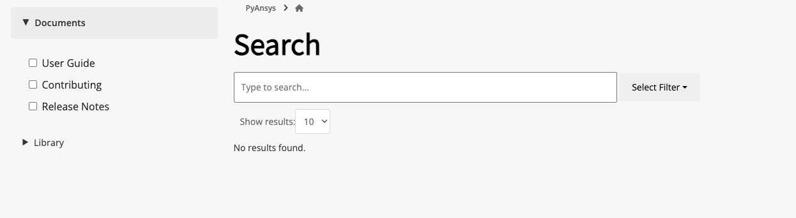

HTML theme options#
In the Sphinx configuration (conf.py) file in the doc directory, you can use the
html_theme_options dictionary to customize the Ansys Sphinx theme.
Static search options#
The Ansys Sphinx theme supports static search options to customize the search experience.
The static search bar is created using Fuse.js. You can provide all
options supported by Fuse.js
through the static_search dictionary in the html_theme_options.
To improve the search performance, a debounce function is available. By
default, a delay of 300 milliseconds is applied. To modify this value, declare
the delay key in the static_search dictionary with a value specifying
the amount of milliseconds to wait before executing the search. A value of
0 disables the debounce function.
Additionally, you can decide the limit of the search results by setting the
limit key in the static_search dictionary. The default value is 10.
To exclude files or directories from the search index, you can use the
files_to_exclude key in the static_search dictionary. This key is a list
of strings representing the directories or files to exclude from the search
index.
Here is an example of how to add the static_search dictionary to the
html_theme_options dictionary:
html_theme_options = {
"static_search": {
"threshold": 0.5,
"limit": 10,
"minMatchCharLength": 1,
"delay": 300,
"files_to_exclude": ["_build", "api/", "examples/sphinx_demo"],
},
}
Note
All other options are available in the Fuse.js documentation.
Here is an example of how to add the static_search dictionary to the
html_theme_options dictionary:
html_theme_options = {
"static_search": {
"threshold": 0.5,
"limit": 10,
"minMatchCharLength": 1,
"delay": 300,
},
}
Note
Serve locally your documentation using the python -m http.server -d
/path/to/docs/html/ to have a live-preview of your search results. This
method is compliant with the CORS policy and allows to
load the generated resource files containing the indices of your
documentation. The search bar does not work if you open the HTML files
directly in the browser.
To open the documentation in a local server, run the following command in the directory where the HTML files are located:
python -m http.server
Then, open the browser and go to http://localhost:8000.
Advanced search options#
The Ansys Sphinx theme supports advanced search capabilities to enhance the user experience.
These options can be configured through the html_theme_options dictionary in your conf.py file.
Multi-index search#
To enable search across multiple documentation sources, use the search_extra_sources key.
This key should be a dictionary where each key is the name of the source and the value is the URL to that source.
Example:
html_theme_options = {
"search_extra_sources":
{
"PyMAPDL": "https://mapdl.docs.pyansys.com/version/stable/",
"PyAnsys": "https://docs.pyansys.com/version/stable/",
}
Search filters#
To organize and group search results, you can define custom filters using the search_filters key.
This key should be a dictionary where each key represents a filter label and the corresponding value is a list of directories or file paths that belong to that filter.
Example:
html_theme_options = {
"search_filters": {
"User Guide": [
"user-guide/",
"getting-started/",
"index/",
],
"Release Notes": ["changelog"],
"Examples": ["examples/"],
"Contributing": ["contribute/"],
},
}
The filters appears as clickable options in the search interface, allowing users to refine their results by content type.
The search filters are displayed as below:
Cheat sheets#
If a cheat sheet has been created for your PyAnsys library, with quarto, you can
add it to the left navigation pane of your documentation.
In the html_theme_options dictionary, you add a child dictionary named cheatsheet
that contain these keys, in the order given:
file: File name including the extension of the cheat sheet. If the file is inside a directory, include the directory name relative to the root of the documentation. For example, if the cheat sheet is in thegetting_starteddirectory, the file name isgetting_started/cheat_sheet.qmd.title: Title of the cheat sheet to be displayed in the left navigation pane.pages: List of names for the pages to include the cheat sheet on. If no value is provided, the cheat sheet is displayed only on the mainindex.htmlfile.version: Version of the cheat sheet. If no value is provided, the version ismainby default.
Here is an example of how to add the cheatsheet dictionary to the html_theme_options` dictionary:
html_theme_options = (
{
"cheatsheet": {
"file": "<file name including the extension of the cheat sheet>",
"title": "<title of the cheat sheet>",
"version": "<version of the cheat sheet>",
"pages": "<list of names for the pages to include the cheat sheet on>", # Optional
},
},
)
Here is an example of how to show a thumbnail of a PyMAPDL cheat sheet in the left navigation pane of its
main index.rst file and the learning.rst file in its “Getting started” section:
html_theme_options = (
{
"cheatsheet": {
"file": "getting_started/cheat_sheet.qmd",
"title": "My awesome cheat sheet",
"version": f"{version}",
"pages": ["index", "getting_started/learning"],
},
},
)
Note
To use this feature, you must have the quarto <https://quarto.org/> package installed. To create thumbnails of generated PDF files,
the theme is using pdf2image. So you should have the poppler package installed in your system.
For more information, see the pdf2image documentation.
What’s new section#
The “What’s new” section is an option that allows you to highlight new features in your library for each minor version within the changelog file.
To install the “What’s new” dependencies from ansys-sphinx-theme, run the following command:
pip install ansys-sphinx-theme[changelog]
To get started, create a YAML file named whatsnew.yml in the doc/changelog.d directory. The
YAML file should contain the following structure:
fragments:
- title: Feature title
version: 0.2.0 # The version the feature is introduced
content: |
Feature description in RST format.
- title: Another feature title
version: 0.1.2
content: |
Feature description in RST format.
The dropdown generation only supports the following RST formats in the “content” field:
Bold: Use double asterisks to wrap the text.
Italics: Use single asterisks to wrap the text.
Code samples: Use single or double backticks to wrap the text.
Links: Use the following format to include links:
`link text <https://www.example.com>`_
Code blocks: Use the following format to include code blocks:
.. code:: python print("hello world")
If a format is used in the “content” field that does not fall into the categories above, it will not be rendered correctly.
To enable the “What’s new” sections and sidebar in the changelog file, add the following dictionary
to the html_theme_options dictionary:
html_theme_options = (
{
"whatsnew": {
"whatsnew_file_path": "../changelog.d/whatsnew.yml",
"changelog_file_path": "changelog.rst",
"sidebar_pages": ["changelog"],
"sidebar_no_of_headers": 3, # Optional
"sidebar_no_of_contents": 3, # Optional
},
},
)
The dictionary contains the following keys:
whatsnew_file_path: The path to the YAML file containing what’s new content local to thedoc/sourcedirectory. If not provided, the what’s new section will not be generated.changelog_file_path: The path to the changelog.rst file local to thedoc/sourcedirectory. If not provided, the what’s new section will not be generated.sidebar_pages: List of names for the pages to include the what’s new sidebar on. If not provided, the what’s new sidebar is not displayed.sidebar_no_of_headers: Number of minor version sections to display in the what’s new sidebar.By default, it displays three version sections in the sidebar.
sidebar_no_of_contents: Number of what’s new content to display under each minor version in thewhat’s new sidebar. If not provided, it displays all dropdowns by default.
The following images show a sample “What’s new” section and sidebar in the changelog file:
Note
If you are using both the “whatsnew” and “cheatsheet” options, the “cheatsheet” option will be displayed first in the left navigation pane, followed by the “What’s new” section to maintain sidebar consistency.